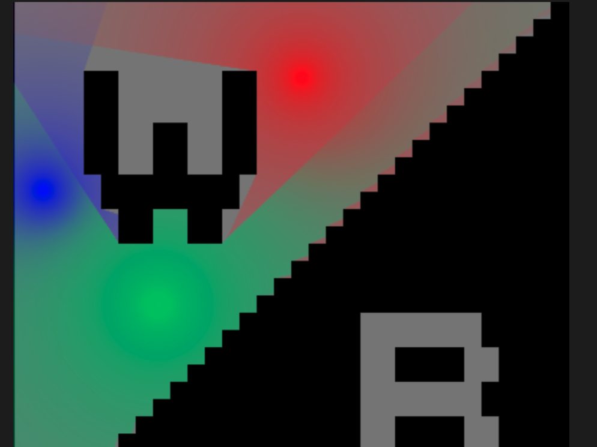

Here is our proposal.
Image processing with edge detection convolution kernel
We used the ridge detection kernel described in this page to process the image. This method essentially does a weighted calculation of the current pixel and surrounding pixels to compute the output pixel. The computations only use the input pixels and do not rely on one another, which means this stage is highly parallelizable. An example of our convolution implementation applied to a common game scenario is below:
original

edge detection

Some modifications to the edge detection algorithm were made to best suit our purposes. Our ray tracer algorithm depends on pixels being black or white, whereas the ridge detection algorithm yields a lot of gray pixels of varying values. We used a combination of scaling and thresholding to produce a reasonably clean portrayal of the image's edges. In addition, we inverted the colors such that edges are black and clear space is white, which is the opposite of what the default algorithm does.
The simplest parallelization was with OpenMP. By adding a pragma omp before iterating through the pixels of the array, we were able to speed the computation up by 5x.
Vectorizing the code with ISPC is difficult due to the 2D nature of the image and also because the types yielded by the image parser are not supported by ISPC or C. I am going to ask about how to resolve this in our meeting tomorrow. We anticipate this will have significant speedup because each computation requires the same number of instructions which means vector utilization will be high. The problem is that if we are unable to overcome the 2D array problem, the overhead of converting the image to a format interactable by ISPC will likely overshadow any performance benefits.
Raytracing
We implemented raytracing with one or more light sources. The algorithm takes in two images, one being the source image to spawn light sources onto, the second being the output of the convolution algorithm to determine ridges on the source image. In addition to image inputs, a text file of light sources is taken in, specifying the position, color, and intensity of each light. Given these inputs, the raytracer would generate a fixed number of rays from each source and propogate these rays at a small granularity (1/10 of a pixel dimension as of now) per time step. A ray itself has a current position vector, current direction vector, color, and intensity. When the position of a ray updates based on its direction, it applies a score to the pixel it is currently within. If the ray is not lying on a ridge, then the score at the incident pixel will be incremented by a value proportional to the inverse of the square of the distance between the ray and its origin. This computation serves to emulate the natural decay of light. Each of these scores must get computed at each pixel for each unique source, this is so that if multiple lights interfere with each other, the partial contribution of color from each light can be applied to the source image, thereby permitting mixing of light color. The final partial scores of each light source's impact on a pixel then need to get converted into a contribution factor of how much to change the pixel value by. The formula for this was produced via first examining general scores at different distances from a light source origin, discretizing corresponding contribution proportions (ex. 0.25, 0.5, 0.75, 1) at reasonable depths to create the tapered lighting effect, and then smoothing out this discretization by producing a best fit log curve to the pairs of scores and proportions. Finally with the proportions of each light sources contribution to a pixel, the pixel value can be updated accordingly.
The parallel algorithm is similar to the sequential algorithm however it is able to extract much parallelism with multiple sources. Since each light source is contributing a partial score, the computations of disparate light sources' rays are modifying different portions of memory. Hence, parallelizing the for loop of light sources is possible with simple OpenMP semantics. After the main ray computations are done, the partial colors have to get updated on the actual pixels of the source image. Parallelizing on pixels here then is also facilitated via preprocessor semantics of OpenMP. The next step is to find a way to parallelize across rays to maximize the true parallelism that may be possible regardless of the number of light sources.
Raytracing applied after edge detection on terraria scene:

Raytracing for multiple light sources applied on low-resolution temporary image
